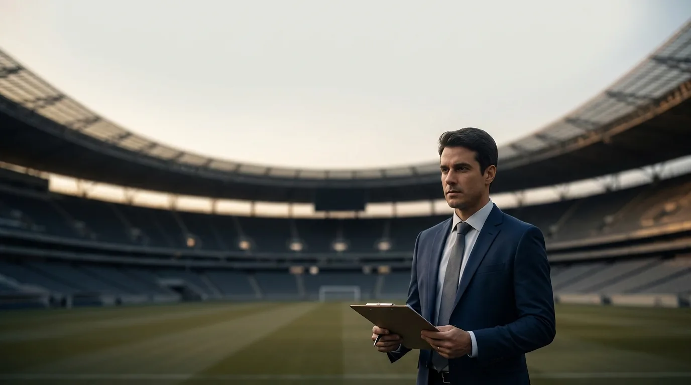
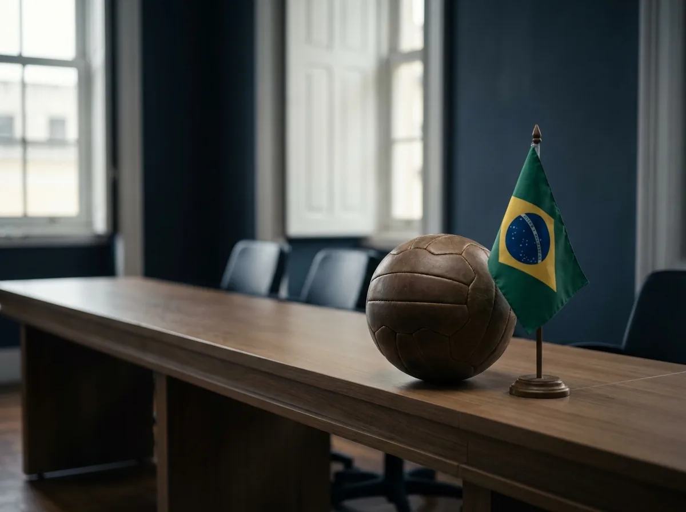
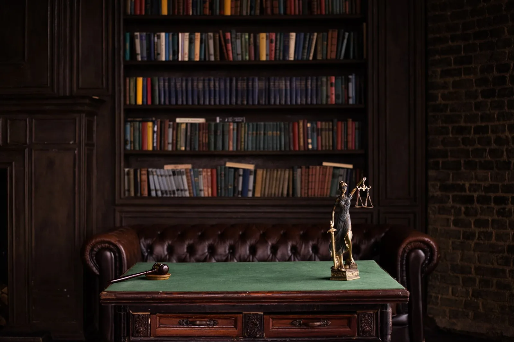
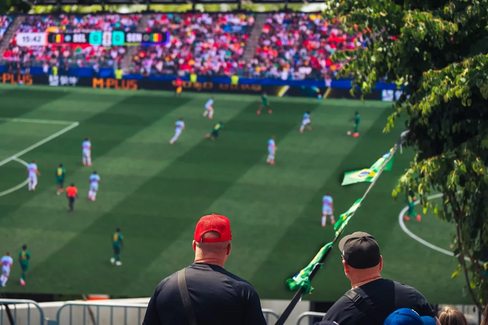

Advogado Desportivo: O que Faz e Quando Contratar

No esporte profissional, uma cláusula mal redigida pode custar anos de carreira a um atleta ou um prejuízo enorme a um clube. Contratos milionários, transferências internacionais, direito de imagem, patrocínios, tribunais com regras próprias: é nesse terreno que trabalha o advogado desportivo, do futebol aos e-sports.
Ainda assim, muita gente só procura esse profissional quando o problema já apareceu. Este guia explica o que faz um advogado desportivo, como funciona a justiça desportiva, o que mudou com a Lei Geral do Esporte e quando atletas, pais, clubes e patrocinadores devem buscar orientação.
A Mussi Advocacia & Consultoria, escritório do advogado José Lucas Mussi com sede em Florianópolis, atua em direito desportivo para clientes de todo o Brasil, de forma remota e presencial. Santa Catarina, onde fica a sede do escritório, ilustra bem essa amplitude: o estado reúne clubes profissionais, ligas de várzea, federações estaduais e cenas fortes de surf, vela, beach tennis e e-sports.
O que é direito desportivo e por que virou uma especialidade
O direito desportivo é o ramo jurídico que regula as relações do esporte: contratos de trabalho de atletas, transferências, competições, punições disciplinares, direito de imagem, patrocínio e a organização de clubes e federações. Na prática, combina normas trabalhistas, civis, empresariais e tributárias com uma legislação esportiva específica.
Essa especialidade tem assento na Constituição Federal, no artigo 217, que trata do esporte como dever do Estado e reconhece a justiça desportiva. O texto constitucional determina que o Poder Judiciário só admite ações sobre disciplina e competições esportivas depois de esgotadas as instâncias da justiça desportiva: a disputa precisa percorrer todos os degraus desse sistema, do julgamento inicial ao último recurso, antes de ir ao Judiciário. O esporte brasileiro tem, portanto, um sistema de julgamento próprio, com regras e prazos diferentes dos do fórum comum.
Um ramo que conversa com várias áreas do direito
Um mesmo caso esportivo costuma misturar temas diferentes. A rescisão de um contrato de atleta, por exemplo, envolve direito do trabalho, cláusulas da legislação esportiva e, muitas vezes, um contrato civil de imagem em paralelo. Já a transferência internacional de um jogador passa por regulamentos de federações e questões tributárias e cambiais.
Por isso, o generalista costuma ter dificuldade nesses casos. O advogado desportivo conhece a legislação, os regulamentos das entidades e o funcionamento dos tribunais da modalidade. Também entende a dinâmica do mercado: janelas de transferência, formação de base, mecanismos de solidariedade (o repasse de um percentual das transferências aos clubes que formaram o atleta) e o peso da imagem na receita do atleta. Para se aprofundar, comece por estas noções gerais de direito desportivo.
O esporte como setor econômico
O esporte também cresceu como atividade econômica. Clubes viraram empresas, competições viraram produtos de mídia e atletas administram a própria imagem como marca. Cresceu o volume de contratos e, com ele, o de conflitos. Modalidades antes informais, como o beach tennis e os e-sports, hoje movimentam patrocínios, equipes profissionais e circuitos organizados.
O que faz um advogado desportivo no dia a dia
Defender atleta em tribunal é só uma parte do trabalho do advogado desportivo. Na maior parte do tempo, o serviço é preventivo: estruturar contratos, revisar cláusulas, orientar negociações e evitar o conflito. Quando a disputa aparece, ele atua na justiça desportiva, na Justiça comum ou em câmaras de arbitragem, órgãos privados em que as partes, por previsão contratual, escolhem um julgador fora do Judiciário (nada a ver com o árbitro da partida).
Contrato especial de trabalho desportivo
O vínculo do atleta profissional com o clube se formaliza pelo contrato especial de trabalho desportivo. Ele tem prazo determinado, registro na entidade de administração da modalidade (no futebol, a CBF; nas demais modalidades, a confederação do esporte) e cláusulas que não existem em um contrato comum. As duas mais importantes são a cláusula indenizatória desportiva, que o atleta, ou o clube que o contrata, paga ao clube atual quando ele se transfere durante a vigência do contrato ou retorna à atividade profissional por outro clube em até 30 meses, e a cláusula compensatória desportiva, que o clube paga ao atleta quando dá causa ao fim do contrato.
O advogado desportivo negocia e revisa esses valores, além de itens como luvas (o prêmio pago pela assinatura do contrato), premiações por desempenho, prazos e condições de renovação. Um contrato de atleta bem estruturado protege as duas partes e evita disputas caras.
Transferências nacionais e internacionais
Transferência de atleta envolve janelas específicas, regulamentos de registro e, no plano internacional, regras da federação mundial de cada modalidade. Também envolve valores de formação: pelos mecanismos de solidariedade citados acima, clubes formadores têm direito a compensação quando o atleta que ajudaram a desenvolver é negociado. O advogado desportivo estrutura essas operações, confere a documentação, calcula os valores e evita punição por irregularidade no registro.
Direito de imagem e patrocínio
O direito de imagem do atleta é uma das áreas mais sensíveis da carreira. A cessão de imagem não é salário: é um contrato separado, com limites legais em relação à remuneração total. Quando esse contrato é mal feito, a Receita e a Justiça do Trabalho podem tratar os valores como salário disfarçado, com encargos retroativos. Cabe ao advogado desportivo redigir e revisar contratos de imagem, patrocínio, publicidade e transmissão, cuidando da coerência entre o contrato de trabalho e o civil.
Defesa na justiça desportiva e disputas com clubes
Quando o conflito chega, o advogado desportivo defende atletas, clubes, dirigentes e federações em processos disciplinares nos tribunais desportivos. Ele também conduz disputas sobre salários atrasados, rescisão indireta (quando o próprio atleta encerra o contrato por falta grave do clube, como salários em atraso, e recebe as verbas como se tivesse sido dispensado sem justa causa), direito de formação, uso indevido de imagem e cobrança de cláusulas contratuais. A tabela abaixo resume situações comuns e o papel do profissional.
| Situação | O que o advogado desportivo faz |
|---|---|
| Atleta vai assinar o primeiro contrato profissional | Revisa cláusulas, luvas, imagem e valores indenizatórios antes da assinatura |
| Clube negocia transferência nacional ou internacional | Estrutura a operação, confere registros e calcula direitos de formação |
| Atleta com salários ou FGTS (Fundo de Garantia) em atraso | Notifica o clube e busca a rescisão indireta com as verbas devidas |
| Atleta ou dirigente punido em partida | Prepara a defesa no tribunal desportivo dentro dos prazos do rito |
| Empresa quer patrocinar equipe ou atleta | Redige o contrato de patrocínio com contrapartidas e proteção de marca |
| Organização de e-sports monta elenco | Formaliza contratos de jogadores, imagem e participação em premiações |
Se você se reconhece em alguma dessas situações, conversar com um especialista antes de assinar ou responder faz diferença. A Mussi Advocacia & Consultoria analisa contratos e disputas de direito desportivo para clientes de todo o Brasil, a partir de Florianópolis.
Justiça desportiva na prática: STJD, TJDs e o CBJD
A justiça desportiva é o sistema que julga infrações disciplinares e questões de competição no esporte. No topo de cada modalidade está o Superior Tribunal de Justiça Desportiva, o STJD; em cada estado funcionam os Tribunais de Justiça Desportiva, os TJDs, ligados às federações estaduais. Apesar do nome, esses órgãos não pertencem ao Poder Judiciário: são tribunais administrativos mantidos pelo próprio sistema esportivo.
O processo nesses tribunais segue o Código Brasileiro de Justiça Desportiva, o CBJD, que define infrações, penas, recursos e procedimentos. As punições vão de advertência e multa até suspensão, perda de pontos e exclusão de competição. Para dirigentes e clubes, uma decisão desfavorável pode comprometer a temporada.

Prazos curtos e rito próprio
O traço mais marcante da justiça desportiva é a velocidade. A Constituição fixa prazo máximo de 60 dias, contados da instauração do processo, para a decisão final. Na prática, os julgamentos são ainda mais rápidos, porque o campeonato não pode esperar: intimações saem em poucos dias e as defesas têm prazos apertados.
Essa velocidade cobra preparo: quem perde um prazo no rito desportivo raramente reverte o prejuízo depois. A defesa exige um advogado desportivo acostumado ao CBJD, capaz de montar a tese, reunir provas em vídeo e súmulas (a súmula é o relatório oficial que o árbitro escreve após a partida) e sustentar oralmente, defendendo o cliente ao vivo perante o tribunal, tudo em poucos dias.
Atenção: a Justiça comum só aprecia ações relativas à disciplina e às competições esportivas depois de esgotadas as instâncias da justiça desportiva, por determinação constitucional. Entrar direto no fórum, nesses casos, costuma levar à extinção do processo: o juiz encerra o caso sem analisar o pedido, e perdem-se tempo e custas.
Justiça desportiva e Justiça comum: cada uma no seu lugar
A justiça desportiva não julga tudo. Questões trabalhistas do contrato de atleta, como salários e verbas rescisórias, vão para a Justiça do Trabalho. Disputas civis sobre imagem e patrocínio vão para a Justiça comum ou para arbitragem, conforme o contrato. A tabela abaixo separa os caminhos.
| Aspecto | Justiça desportiva | Poder Judiciário |
|---|---|---|
| Natureza | Tribunais administrativos do sistema esportivo | Poder Judiciário |
| O que julga | Infrações disciplinares e questões de competição | Conflitos trabalhistas, civis, empresariais e tributários |
| Norma principal | CBJD e regulamentos das entidades | CLT, Código Civil e legislação geral |
| Prazo para decidir | Máximo de 60 dias, por regra constitucional | Sem prazo máximo definido |
| Exemplos | Expulsão, doping, briga em partida, escalação irregular | Salário atrasado, disputa de imagem, cobrança de cláusula |
Saber em qual porta bater, e em que ordem, é parte da estratégia. Um advogado desportivo experiente avalia o caso e define o foro correto antes de qualquer medida.
Lei Geral do Esporte: o que mudou com a Lei 14.597/2023
Em junho de 2023 entrou em vigor a Lei Geral do Esporte, a Lei 14.597/2023, o novo marco geral do esporte brasileiro. Ela não revogou a Lei Pelé, a Lei 9.615/1998: o dispositivo que faria essa revogação foi vetado, e o veto foi mantido justamente para preservar direitos dos atletas. As duas leis convivem hoje, e é preciso avaliar caso a caso qual norma se aplica. A nova lei reorganizou o Sistema Nacional do Esporte, o financiamento, a integridade das competições e as relações de trabalho no setor. Até a nomenclatura reflete a convivência: a Lei Pelé fala em contrato de trabalho "desportivo" e a LGE em contrato "esportivo", mas o conteúdo é o mesmo tipo de contrato.

O que permaneceu para atleta e clube
Nos pontos centrais da vida contratual, as duas leis preveem estrutura semelhante. O contrato especial de trabalho segue com prazo determinado e registro na entidade de administração. As cláusulas indenizatória e compensatória continuam previstas, com teto legal para a indenizatória nas transferências nacionais. A regra do direito de imagem contratado à parte do salário, vista acima, também permanece nos dois textos. E ambos protegem o clube formador, recompensando quem investe na base.
O que a nova lei trouxe de relevante
A Lei Geral do Esporte deu mais atenção à integridade esportiva, com regras sobre manipulação de resultados e governança das entidades. Tratou da proteção de atletas em formação, com deveres mais claros dos clubes quanto a alojamento, saúde e educação, e organizou a transição de carreira. As exigências de transparência ficaram mais definidas, com reflexos diretos em quem recebe recursos públicos.
Importante: contratos assinados antes da LGE continuam produzindo efeitos, mas agora existem duas leis em vigor ao mesmo tempo. Uma revisão preventiva identifica cláusulas que envelheceram e evita discussões sobre qual regra se aplica a cada situação.
A convivência entre as duas leis ainda gera dúvidas em clubes, federações e atletas. Se o seu contrato, regulamento ou estatuto foi escrito antes de 2023, este é um bom momento para revisá-lo. A Mussi Advocacia & Consultoria acompanha a aplicação das duas leis e orienta clientes em todo o país nessa adequação.
Quem precisa de advogado desportivo e quando contratar
A resposta curta: todo mundo que vive do esporte ou investe nele. A completa depende do momento de cada um, como mostram os perfis abaixo. Também ajuda conhecer a importância da assessoria jurídica nas atividades esportivas.
Atleta assinando o primeiro contrato profissional
O primeiro contrato define o rumo financeiro da carreira. Luvas, salário, imagem, prazo e cláusula indenizatória precisam ser lidos por quem entende do mercado antes da assinatura. Um advogado desportivo compara os valores com a realidade da modalidade, aponta riscos e negocia ajustes. Depois de assinado, o espaço de correção diminui muito.
Atleta de base e seus pais
Pais de atletas de base assinam termos de alojamento, autorizações de imagem e contratos de formação, muitas vezes sem orientação. A legislação protege o menor em formação, com deveres claros para o clube formador, mas essa proteção só funciona quando alguém a exige. Orientação antes de assinar evita a perda de direitos que valem muito na profissionalização.
Dica para pais: guarde cópia de todo documento assinado junto ao clube, incluindo matrícula, autorizações de viagem e de uso de imagem. Esse histórico costuma decidir disputas sobre direito de formação anos depois.
Clubes, federações e organizadores de competição
Clube que estrutura departamento jurídico ou contrata assessoria externa reduz passivo trabalhista, organiza contratos de atletas e comissão técnica e chega preparado aos tribunais desportivos. Federações precisam de estatutos e regulamentos alinhados à Lei Geral do Esporte, principalmente quando recebem recurso público. Organizadores de eventos lidam com termos de responsabilidade, seguros, transmissão e uso de imagem de participantes.

Patrocinadores e organizações de e-sports
Quem patrocina esporte precisa de contratos com contrapartidas claras, proteção de marca e regras de encerramento. Já os e-sports vivem um momento peculiar: equipes profissionais, premiações altas e jogadores jovens, quase sempre sem a tradição contratual do esporte convencional. Contratos de jogador, streaming, imagem e participação em ligas pedem a mesma atenção técnica do futebol, e a experiência do advogado desportivo se aplica ao cenário digital.
Como escolher o profissional certo
Alguns critérios objetivos ajudam. Verifique se o profissional atua de fato em direito desportivo, com publicações, cursos ou casos na área. Avalie se ele conhece a sua modalidade e os tribunais desportivos. Prefira quem explica a estratégia com clareza e apresenta os riscos por escrito. Desconfie de promessa de resultado garantido, que a ética da advocacia proíbe. E lembre: a atuação é nacional por natureza; com processos eletrônicos, o escritório não precisa estar na sua cidade para conduzir bem o seu caso.
Perguntas frequentes sobre advogado desportivo
O que faz um advogado desportivo?
O advogado desportivo cuida das relações jurídicas do esporte. Ele redige e revisa contratos de atletas, transferências, imagem e patrocínio, além de defender atletas, clubes e dirigentes na justiça desportiva e na Justiça comum. A atuação preventiva, antes da assinatura dos contratos, é a parte mais valiosa do trabalho.
Qual a diferença entre justiça desportiva e Justiça comum?
A justiça desportiva é formada por tribunais administrativos do próprio sistema esportivo, como o STJD e os TJDs, e julga infrações disciplinares e questões de competição pelo CBJD. A Justiça comum é o Poder Judiciário e julga os demais conflitos, como disputas trabalhistas e civis. Pela Constituição, ações sobre disciplina e competições só chegam ao Judiciário depois de esgotadas as instâncias desportivas.
Atleta de base precisa de advogado desportivo?
Precisa, e quanto antes melhor. Na base se assinam contratos de formação, autorizações de imagem e termos de alojamento que produzem efeitos por toda a carreira. A orientação jurídica protege o menor, preserva o direito de formação e evita cláusulas abusivas na profissionalização.
A Lei Geral do Esporte substituiu a Lei Pelé?
Não integralmente. A Lei 14.597/2023 é o novo marco geral do esporte, mas a Lei 9.615/1998, conhecida como Lei Pelé, continua em vigor: o dispositivo que a revogaria foi vetado, e o veto foi mantido. As duas leis convivem, e um advogado desportivo avalia, caso a caso, qual norma se aplica ao contrato ou à disputa.
E-sports também precisam de advogado desportivo?
Sim. Organizações de e-sports contratam jogadores, negociam patrocínios, exploram imagem e participam de ligas com regulamentos próprios. Esses vínculos geram as mesmas questões jurídicas do esporte tradicional, muitas vezes com jogadores menores de idade, o que aumenta a necessidade de contratos bem estruturados.
Quando devo procurar um advogado desportivo?
O melhor momento é antes de assinar qualquer contrato ou de responder a qualquer processo. Na fase preventiva, o profissional consegue negociar cláusulas e evitar o litígio. Depois do conflito instalado, a atuação continua possível, mas os prazos curtos da justiça desportiva exigem procura imediata.
Assessoria jurídica antes da assinatura
Com a Lei Geral do Esporte em vigor ao lado da Lei Pelé, tribunais desportivos que decidem em semanas e um mercado cada vez mais profissional, orientação especializada deixou de ser luxo de grande clube. Ela protege o atleta, a família, o dirigente e o patrocinador antes que o problema apareça.
Se você quer revisar um contrato de atleta, estruturar um clube ou uma equipe de e-sports, resolver uma disputa de imagem ou preparar uma defesa na justiça desportiva, fale com a Mussi Advocacia & Consultoria. De Florianópolis, o escritório de José Lucas Mussi atende atletas, clubes, federações e patrocinadores de todo o Brasil, de forma remota e presencial.